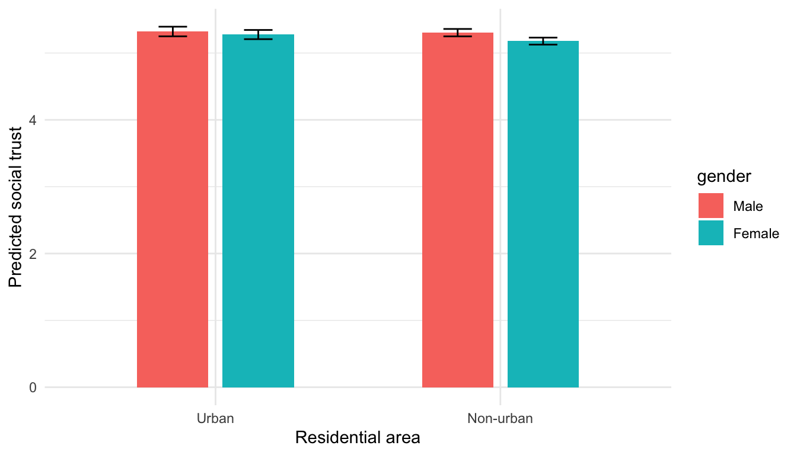
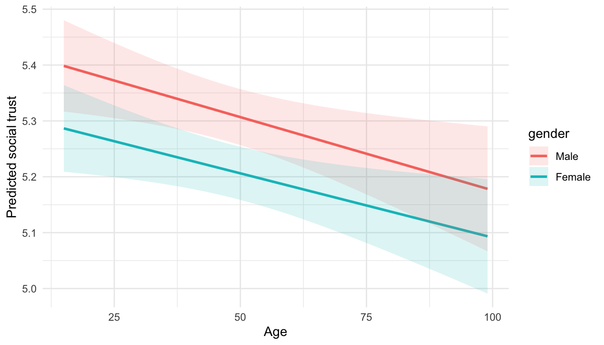
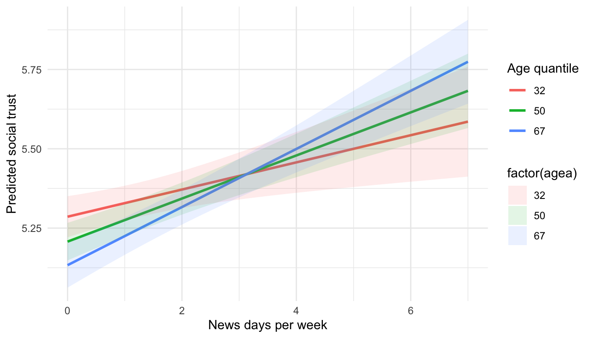
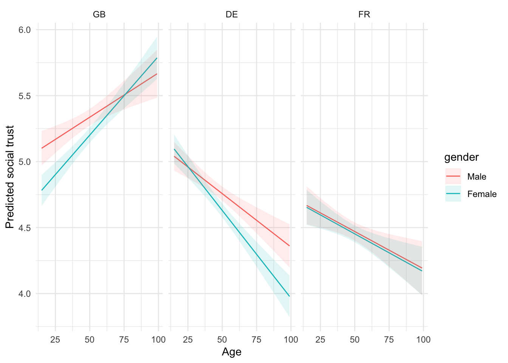

Chapter 4 Day 2 — Linear regression with interaction effects
We replace the old dimensionality-reduction content with a deep dive on interactions. The dependent variable is social trust (ppltrst). Predictors come from media use and demographics in the ESS subset.
Model notation recap
- Baseline linear model: \(Y_i = \beta_0 + \mathbf{x}_i^\top \boldsymbol\beta + \varepsilon_i\), \(\varepsilon_i \sim \text{i.i.d. }(0, \sigma^2)\).
- Binary–binary interaction (e.g., gender × urban): \(Y_i = \beta_0 + \beta_1 \text{Female}_i + \beta_2 \text{Urban}_i + \beta_3 (\text{Female}_i \times \text{Urban}_i) + \dots\).
- \(\beta_3\) is the difference-in-differences: the extra gap between women and men when Urban = 1 minus the gap when Urban = 0.
- Binary–continuous interaction (gender × age): slope for age becomes \(\beta_{\text{age}} + \beta_{\text{age} \times \text{female}} \cdot \text{Female}_i\); draw ribbons to see how slopes differ across groups.
- Three-way interaction (gender × age × country): the age slope is country- and gender-specific: \(\partial Y / \partial \text{age} = \beta_{\text{age}} + \beta_{\text{age}\times g} g + \beta_{\text{age}\times c} c + \beta_{\text{age}\times g \times c} g c\).
library(dplyr)
library(ggplot2)
library(broom)
library(purrr)
library(tidyr)
source("R/clean_ess.R")
ess <- clean_ess()
# Fit once and reuse
m0 <- lm(ppltrst ~ agea + gender + news_days + country, data = ess)
m1 <- lm(ppltrst ~ gender * urban + agea + news_days + country, data = ess)
m2 <- lm(ppltrst ~ gender * agea + news_days + country, data = ess)
m3 <- lm(ppltrst ~ agea * news_days + gender + country, data = ess)
m4 <- lm(ppltrst ~ gender * agea * country + news_days, data = ess)
# Predicted values for plots (simple grids)
nd1 <- expand.grid(
urban = c("Urban", "Non-urban"),
gender = c("Male", "Female"),
agea = mean(ess$agea, na.rm = TRUE),
news_days = mean(ess$news_days, na.rm = TRUE),
country = "GB"
)
pred1 <- predict(m1, newdata = nd1, se.fit = TRUE)
nd1$fit <- pred1$fit
nd1$lo <- pred1$fit - 1.96 * pred1$se.fit
nd1$hi <- pred1$fit + 1.96 * pred1$se.fit
int_plot1 <- ggplot(nd1, aes(x = urban, y = fit, fill = gender)) +
geom_col(position = position_dodge(width = 0.6), width = 0.5) +
geom_errorbar(aes(ymin = lo, ymax = hi), position = position_dodge(width = 0.6), width = 0.2) +
labs(y = "Predicted social trust", x = "Residential area") +
theme_minimal()
age_seq <- seq(min(ess$agea, na.rm = TRUE), max(ess$agea, na.rm = TRUE), length.out = 60)
nd2 <- expand.grid(agea = age_seq, gender = c("Male", "Female"),
news_days = mean(ess$news_days, na.rm = TRUE),
country = "GB")
pred2 <- predict(m2, newdata = nd2, se.fit = TRUE)
nd2$fit <- pred2$fit
nd2$lo <- pred2$fit - 1.96 * pred2$se.fit
nd2$hi <- pred2$fit + 1.96 * pred2$se.fit
int_plot2 <- ggplot(nd2, aes(x = agea, y = fit, color = gender)) +
geom_line(size = 1) +
geom_ribbon(aes(ymin = lo, ymax = hi, fill = gender), alpha = 0.15, color = NA) +
labs(y = "Predicted social trust", x = "Age") +
theme_minimal()
news_seq <- seq(min(ess$news_days, na.rm = TRUE), max(ess$news_days, na.rm = TRUE), length.out = 40)
nd3 <- expand.grid(news_days = news_seq,
agea = quantile(ess$agea, c(.2, .5, .8), na.rm = TRUE),
gender = "Male",
country = "GB")
pred3 <- predict(m3, newdata = nd3, se.fit = TRUE)
nd3$fit <- pred3$fit
nd3$lo <- pred3$fit - 1.96 * pred3$se.fit
nd3$hi <- pred3$fit + 1.96 * pred3$se.fit
int_plot3 <- ggplot(nd3, aes(x = news_days, y = fit, color = factor(agea))) +
geom_line(size = 1) +
geom_ribbon(aes(ymin = lo, ymax = hi, fill = factor(agea)), alpha = 0.12, color = NA) +
labs(y = "Predicted social trust", x = "News days per week", color = "Age quantile") +
theme_minimal()
nd4 <- expand.grid(agea = age_seq,
gender = c("Male","Female"),
country = c("GB","DE","FR"),
news_days = mean(ess$news_days, na.rm = TRUE))
pred4 <- predict(m4, newdata = nd4, se.fit = TRUE)
nd4$fit <- pred4$fit
nd4$lo <- pred4$fit - 1.96 * pred4$se.fit
nd4$hi <- pred4$fit + 1.96 * pred4$se.fit
int_plot4 <- ggplot(nd4, aes(x = agea, y = fit, color = gender)) +
geom_line() +
geom_ribbon(aes(ymin = lo, ymax = hi, fill = gender), alpha = 0.12, color = NA) +
facet_wrap(~ country) +
labs(y = "Predicted social trust", x = "Age") +
theme_minimal()
# OLS intuition demo (interactive)
ess_small <- ess |> select(ppltrst, agea) |> drop_na() |> slice_sample(n = 600)
fit_simple <- lm(ppltrst ~ agea, data = ess_small)
base_resid <- ggplot(ess_small, aes(x = agea, y = ppltrst)) +
geom_point(alpha = 0.4) +
geom_abline(slope = coef(fit_simple)[2], intercept = coef(fit_simple)[1], color = "#4C78A8", size = 1.1) +
geom_segment(aes(xend = agea, yend = fitted(fit_simple)), alpha = 0.25, color = "#9ecae1") +
labs(x = "Age", y = "Trust (0-10)", title = "OLS fit with residuals") +
theme_minimal()
slope_grid <- seq(coef(fit_simple)[2] - 0.08, coef(fit_simple)[2] + 0.08, length.out = 30)
anim_df <- map_dfr(slope_grid, ~{
pred <- coef(fit_simple)[1] + .x * ess_small$agea
tibble(agea = ess_small$agea,
ppltrst = ess_small$ppltrst,
slope = sprintf("%.3f", .x),
pred = pred,
resid = ppltrst - pred)
})
anim_plot <- ggplot(anim_df, aes(x = agea, y = ppltrst, frame = slope)) +
geom_point(alpha = 0.35) +
geom_abline(aes(slope = as.numeric(slope), intercept = coef(fit_simple)[1]), color = "#4C78A8", size = 1) +
labs(x = "Age", y = "Trust (0-10)", title = "Searching for the best-fit slope") +
theme_minimal()4.2 1. Baseline linear model
4.2.0.2 Output
## # A tibble: 6 x 5
## term estimate std.error statistic p.value
## <chr> <dbl> <dbl> <dbl> <dbl>
## 1 (Intercept) 4.68 0.0394 119. 0
## 2 agea -0.00245 0.000691 -3.54 4.01e- 4
## 3 genderMale 0.101 0.0246 4.12 3.84e- 5
## 4 news_days 0.0727 0.00988 7.36 1.93e-13
## 5 countryFR -0.244 0.0307 -7.94 2.00e-15
## 6 countryGB 0.545 0.0287 19.0 9.60e-80Interpretation: Trust increases slightly with age and differs by country and gender; focus on sign and magnitude of the coefficients rather than raw p-values when discussing effect sizes.
4.3 2. Binary × Binary interaction (gender × urban)
4.3.0.2 Output
## # A tibble: 8 x 5
## term estimate std.error statistic p.value
## <chr> <dbl> <dbl> <dbl> <dbl>
## 1 (Intercept) 4.65 0.0412 113. 0
## 2 genderMale 0.126 0.0295 4.28 1.85e- 5
## 3 urbanUrban 0.0979 0.0365 2.68 7.34e- 3
## 4 agea -0.00238 0.000692 -3.44 5.92e- 4
## 5 news_days 0.0716 0.00990 7.23 4.79e-13
## 6 countryFR -0.244 0.0307 -7.96 1.71e-15
## 7 countryGB 0.546 0.0288 19.0 5.96e-80
## 8 genderMale:urbanUrban -0.0806 0.0529 -1.52 1.28e- 1 Interpretation: The urban–rural trust gap is small; note whether the CI bars for Male vs Female overlap. If they do, the moderation by gender is likely negligible.
Interpretation focus: Does the urban–rural gap differ by gender?
4.4 3. Binary × Continuous interaction (gender × age)
4.4.0.2 Output
## # A tibble: 7 x 5
## term estimate std.error statistic p.value
## <chr> <dbl> <dbl> <dbl> <dbl>
## 1 (Intercept) 4.68 0.0498 93.9 0
## 2 genderMale 0.117 0.0691 1.69 9.14e- 2
## 3 agea -0.00230 0.000925 -2.49 1.29e- 2
## 4 news_days 0.0727 0.00988 7.36 1.88e-13
## 5 countryFR -0.244 0.0307 -7.94 2.05e-15
## 6 countryGB 0.545 0.0287 19.0 9.42e-80
## 7 genderMale:agea -0.000321 0.00134 -0.240 8.10e- 1 Interpretation: Slopes by age differ by gender; parallel ribbons would imply no interaction. Diverging ribbons indicate the age effect depends on gender.
Key idea: slopes for age are estimated separately for men and women.
4.5 4. Continuous × Continuous interaction (age × news consumption)
4.5.0.2 Output
## # A tibble: 7 x 5
## term estimate std.error statistic p.value
## <chr> <dbl> <dbl> <dbl> <dbl>
## 1 (Intercept) 4.78 0.0516 92.6 0
## 2 agea -0.00436 0.000975 -4.48 7.65e- 6
## 3 news_days -0.00178 0.0285 -0.0627 9.50e- 1
## 4 genderMale 0.101 0.0246 4.12 3.75e- 5
## 5 countryFR -0.243 0.0307 -7.92 2.46e-15
## 6 countryGB 0.548 0.0288 19.1 1.57e-80
## 7 agea:news_days 0.00139 0.000500 2.79 5.31e- 3 Interpretation: Check whether the news-consumption slope changes across age quantiles; overlapping ribbons mean little moderation, separated ribbons suggest stronger news effects at certain ages.
Discuss whether news exposure moderates the age–trust relationship.
4.6 5. Three-way interaction (gender × age × country)
4.6.0.2 Output
## # A tibble: 13 x 5
## term estimate std.error statistic p.value
## <chr> <dbl> <dbl> <dbl> <dbl>
## 1 (Intercept) 5.19 0.0760 68.2 0
## 2 genderMale -0.133 0.107 -1.24 2.14e- 1
## 3 agea -0.0133 0.00149 -8.92 4.69e-19
## 4 countryFR -0.555 0.119 -4.69 2.79e- 6
## 5 countryGB -0.692 0.111 -6.25 4.24e-10
## 6 news_days 0.0775 0.00988 7.84 4.66e-15
## 7 genderMale:agea 0.00521 0.00211 2.48 1.33e- 2
## 8 genderMale:countryFR 0.147 0.173 0.849 3.96e- 1
## 9 genderMale:countryGB 0.531 0.162 3.28 1.04e- 3
## 10 agea:countryFR 0.00756 0.00229 3.30 9.58e- 4
## 11 agea:countryGB 0.0253 0.00213 11.9 1.92e-32
## 12 genderMale:agea:countryFR -0.00512 0.00335 -1.53 1.26e- 1
## 13 genderMale:agea:countryGB -0.0104 0.00312 -3.35 8.23e- 4 Interpretation: Three-way plots show country-specific age slopes by gender; look for countries where ribbons separate widely—that’s where the interaction is substantive.
Strategy: interpret pairwise contrasts within each country before comparing across countries.
4.8 Problem set — Interaction lab
- Refit
m1but swapurbanwith a binary indicator for high education (e.g.,eduyrs >= 15). Interpret the gender gap at low vs high education. - Build a model with
ppltrst ~ news_days * country + agea + gender. Compute marginal effects ofnews_dayswithin each country. - Add a three-way term
gender * urban * country. Plot predicted trust for all six gender-by-urban-by-country profiles. - Briefly report which interaction improves fit (compare adjusted R² and AIC) and whether the effect is substantively meaningful.
Use marginaleffects::plot_slopes() and plot_predictions() to visualise interactions instead of only staring at coefficients.